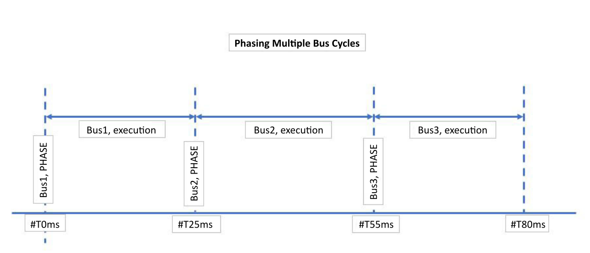

To minimize the number of events being triggered from the I/O system, set the bus cycle as slow as possible according to your process needs. Keep in mind that this may conflict with a desired level of determinism, which may require short cycle time.
To help prevent timing conflicts among multiple bus cycles, use the PHASE parameter (in the Hardware Configuration editor) to delay bus cycle start times. The PHASE parameter delays the execution of a bus cycle by the configured number of milliseconds.
For example:
Bus1: PHASE = #T0ms (execution time 25ms)
Bus2: PHASE = #T25ms (execution time 30ms)
Bus3: PHASE = #T55ms (execution time 25ms)
And so forth...

For the M580 Distributed PAC (M580d), set I/O promptness to a value superior to the BusCycle rate. In this way, the I/O promptness can be increased to allow more time for the system to process events and communicate with I/O. This configuration can prevent I/Os going to fallback if they timeout because communication events are sometimes delayed.